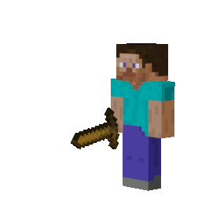
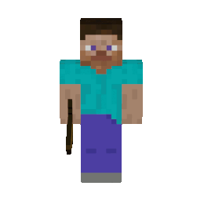
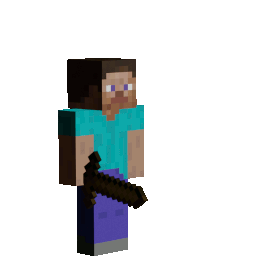

Better Combat 1.16.5 Port



Better Combat adds an animated combat system based on Minecraft dungeons. Instead of struggling to hover over people with your mouse, Better Combat tracks your weapons collisions with monsters throughout its animation to apply damage. You can even see your weapon animations in first person! Datapacks can add animation definitions for weapons from any mod and many are already supported by automatic fallback compatibility. Custom weapon animations are created in blender. Learn More
Downloads
- The official project supports Forge and Fabric versions 1.18 and 1.19: ZsoltMolnarrr/BetterCombat.
- My unofficial fork supports Forge 1.16.5 LukeGrahamLandry/BetterCombat. Please report any bugs on my Github Issues page rather than annoying the original author.
Development Sponsors
The development of the official Forge version of Better Combat for 1.19 and 1.18 as well as the unofficial 1.16.5 backport was made possible by adam98991. Anyone who enjoys Better Combat on Forge should give them a massive thanks. Check out their modpack MC Eternal and keep an eye on the development of MCE2 on the discord server!Related Projects
- Combat Roll: Forge 1.16.5 or 1.18/1.19 Forge/Fabric
- Power Scale: Forge 1.16.5 or 1.18/1.19 Fabric